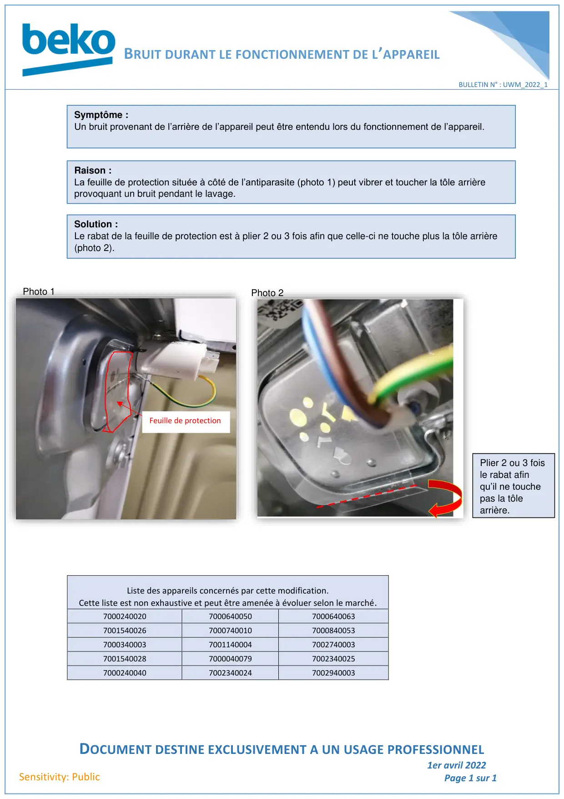

Bulletin Technique Bruit anormal UWM

BRUIT DURANT LE FONCTIONNEMENT DE L’APPAREILDOCUMENT DESTINE EXCLUSIVEMENT A UN USAGE PROFESSIONNEL1er avril 2022Page 1 sur 1BULLETIN N° : UWM_2022_1Sensitivity: PublicListe des appareils concernés par cette modification.Cette liste est non exhaustive et peut être amenée à évoluer selon le marché.700024002070006400507000640063700154002670007400107000840053700034000370011400047002740003700154002870000400797002340025700024004070023400247002940003Symptôme :Un bruit provenant de l’arrière de l’appareil peut être entendu lors du fonctionnement de l’appareil.Raison :La feuille de protection située à côté de l’antiparasite (photo 1) peut vibrer et toucher la tôle arrièreprovoquant un bruit pendant le lavage.Solution :Le rabat de la feuille de protection est à plier 2 ou 3 fois afin que celle-ci ne touche plus la tôle arrière(photo 2).Feuille de protectionPhoto 1Photo 2Plier 2 ou 3 foisle rabat afinqu’il ne touchepas la tôlearrière.
1 / 1